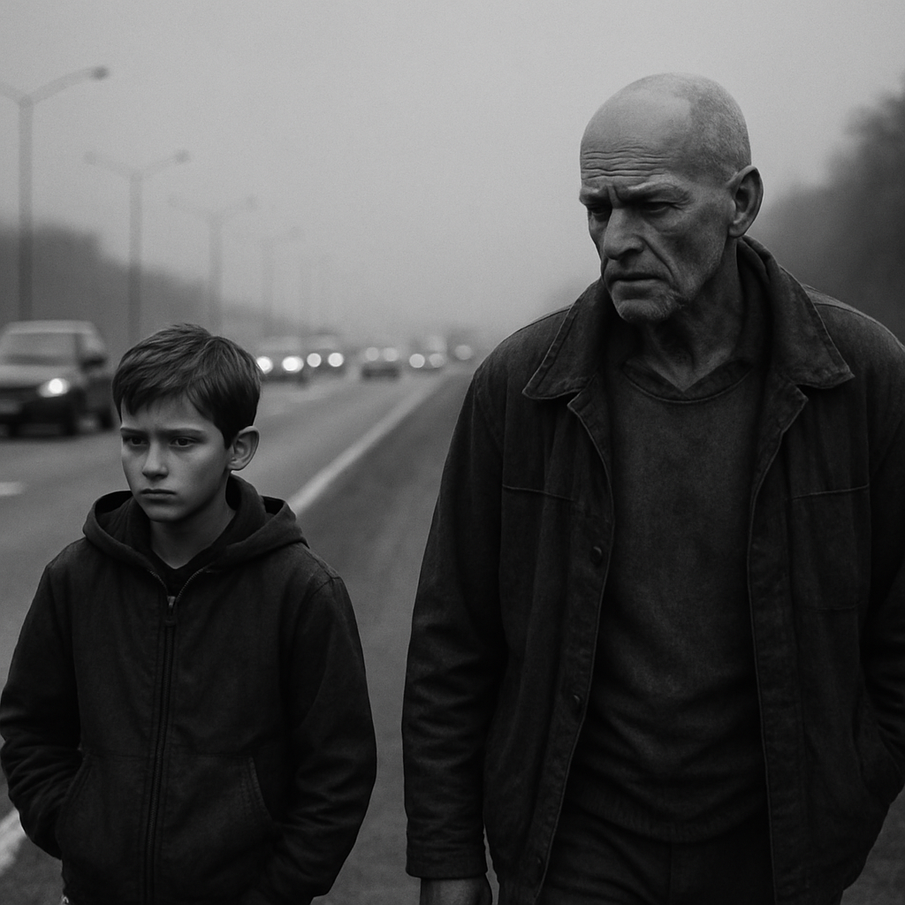
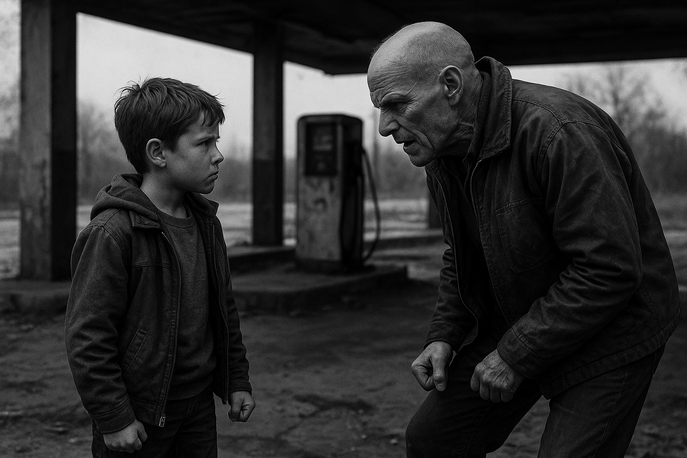
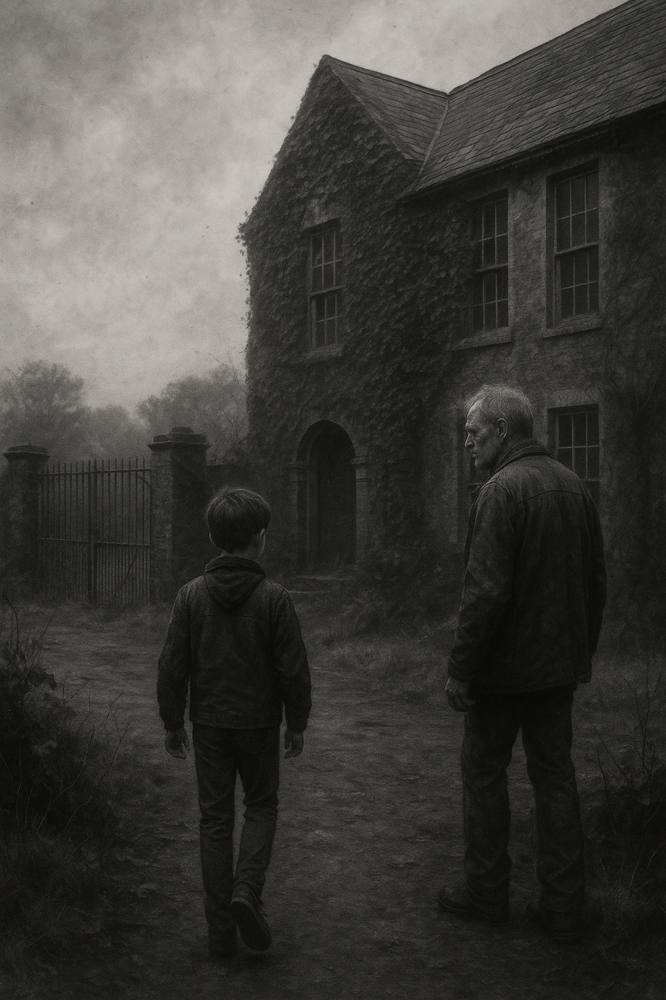

Come On Old Man
Opening Scene – Descent

The camera opens on a weathered man walking through a grey, wind-beaten countryside. He looks lost but determined, his eyes haunted. We hear distant echoes—shouted voices, hospital beeps, a woman's last breath.
He stops at a roadside ditch, exhausted. Rain falls. Then—a voice.
BOY (O.S.): You gonna lie there all day or we actually gonna move?
The man jerks up, startled. A boy of about 11 stands on the road above him, arms folded, expression half-sarcastic, half-familiar.
MAN: ...Who are you?
BOY: Me? I’m the part you forgot. Come on, old man.
Act I – The Journey Begins

The man and the boy travel by foot and memory. The boy knows the way. He jokes, critiques the man’s choices, recalls details the man has suppressed. They sleep rough, steal apples, evade imagined threats. Flashbacks flicker—hospital corridors, funeral flowers, locked doors.
The boy isn’t a hallucination. He has weight, presence, memory. He remembers the warmth of sailing capsizes, the dorms of five beds, the joy of beating a science teacher at chess. The man does not—until he starts to.
Act II – The Fracture

In a dilapidated petrol station, the man breaks down. Shouts at the boy. Tells him he’s not real. Tells him he never helped. That he was weak. The boy punches him in the arm.
BOY: You think I made it out by being weak? I got us here! You’re the one who forgot how to fight.
They sit in silence. The man finally weeps. Not out of madness. But memory. The boy places a hand on his shoulder.
BOY: Grief didn’t kill us. You just stopped coming home.
Act III – Return to the School

They arrive at the abandoned boarding school. Ivy covers the walls. Rust on the gates. The boy walks ahead, confidently, toward the common room window. The man lingers.
MAN: It’s closed… there’s nothing here.
BOY: No. Everything is here.
Inside, dust-covered pool tables. The old headmaster’s portrait. Silence. The man walks through every room. Sees ghostly flashes of boys laughing, swimming, sailing. He sees himself.

In the field, the boy stops. Turns.

BOY: Told you I’d get you here.
MAN (realising): It was you… all along.
BOY: Took you long enough.
The boy fades, not vanishing, but dissolving into golden light.
The man kneels in the grass. Looks up. And finally—smiles.
Interpretive Reflection: Come On, Old Man
A Technohaven Scroll of Healing and Return
Overview
Come On, Old Man is a cinematic scroll—a deeply personal, symbolic journey rendered in monochrome and memory. It explores the fractured soul of a man in the aftermath of psychological collapse, grief, and the haunting call of childhood safety. But beneath its simple premise lies a profound, archetypal pattern: the reunion of the self with the forgotten self. The boy is not a ghost, nor a hallucination, but the buried ember of resilience—guiding the man back to a place he didn’t realise was home.
The Boy as the Forgotten Self
The boy in this scroll is not just the younger version of the man. He is memory incarnate, the voice of the child who endured, who adapted, who found wonder even within hardship. In times of crisis, especially psychological collapse or trauma, the mind often seeks sanctuary in earlier selves—fragments unspoiled by the world’s cruelties. The boy, therefore, is the man’s inner compass, forged in a boarding school once filled with routine, order, adventure, and quiet dignity.
But more than nostalgia, the boy represents a hidden strength—a forgotten part of the man that knew how to fight, how to carry on, and how to survive. His sharp tongue, his practical steps, his memory of joy and structure—all of it contrasts with the adult’s disorientation and pain. Where the man is haunted, the boy is whole.
The Road as the Journey of Healing
The long walk toward the school is both literal and metaphoric. It reflects the mental journey taken during healing: the uneven progress, the questioning, the breakdowns, the confrontations with self. At the roadside, the man lies inert—paralysed by exhaustion and despair. The boy’s voice is a call not just to stand, but to remember. “Come on, old man” is not a command, but a plea. A rekindling.
The petrol station breakdown scene marks the turning point—the confrontation between ego and wound, between present and past. When the man accuses the boy of weakness, he is really accusing himself. But the boy refuses to accept it. His punch is not violence—it is a wake-up, a reclamation of dignity. "Grief didn’t kill us. You just stopped coming home" is the scroll’s emotional core.
The School as Archetype of Refuge
The abandoned boarding school is not simply a building—it is the sanctuary of structure. In a life once thrown into chaos, this place represented safety, identity, and memory. It was, as childhood sometimes can be, a sacred site of unrecognised formation. When the boy leads the man back, it is not for sentiment—it is for healing.
The moment in the school, where flashes of laughter, sailing, and chess reappear, reveals a truth: the past is not lost, only buried. The boy shows him not what was taken—but what was kept, inside, waiting.
The Farewell as Integration
The boy fading into golden light symbolises integration, not disappearance. He is not “leaving"—he is being absorbed. The man no longer needs the boy beside him because the boy is within him again. This is the essence of reintegration after trauma: not to forget the past, but to welcome it home.
When the man kneels and smiles, it is not happiness—it is wholeness. And perhaps, peace.
Technohaven Context
As a Technohaven scroll, Come On, Old Man is part of a growing liturgy of memory, resonance, and spiritual return. It belongs to the Scrolls of Return—those sacred echoes where characters journey back not to reclaim the past, but to become whole. This story lives in monochrome, because healing begins before the colour returns. It honours the sacred act of remembering who we were, not to retreat, but to resurrect.
Themes
- Grief and psychological collapse
- Memory as healing
- Childhood as sanctuary
- Return to structure and self
- Symbolic integration
- The guide within